Profile computes the physics ceiling for your GPU and model, measures the live server against it, names the one cause holding it back, and gives you the flag to change. Then it measures whether the fix worked.
Every value is measured or marked. A dash means Profile could not read it. An (est) means the number came from the physics model, not the server.
PROFILE v2.1.4 [Qwen3.6-27B] [NVIDIA H100 80GB HBM3] GPU decode_eff ~0.9% | power 653W | $5.09/1M output tok (est) | vRAM 74/80GB REQUESTS run 14 (4.0%) | wait 4 | max 345 LATENCY ttft 8.7s (p95 19.2s) | tpot 97ms (p95 159ms) CACHE kv_cache 93.1% avg (100.0% peak) | pfix_cache - THROUGHPUT 163 tok/s ISSUES: [!] KV Cache Pressure seen in 92% of windows Cause: KV cache 94% avg in fired windows, 100% peak (threshold: 88%) 4 requests queued on KV admission Fix: Lower --max-model-len (current: 262144). Observed avg 13.9k tok/request. Enable --enable-prefix-caching to share KV blocks across prefixes. Confidence: High
Eight rules watch eight failure modes. A mutual exclusivity table removes symptoms another cause already explains, and a priority DAG keeps a tuning suggestion from ever outranking an active bottleneck. One primary is shown; the rest are held.

Profile reads the live server under its own traffic. No restarts, no synthetic load, no agent.
Everything in the block, one restart. Profile reconnects when vLLM returns.
New --max-num-seqs [current: 345]: 170
Regressions are labelled, not buried. A tool that only reports improvements cannot be trusted when it reports one.
Throughput 163 → 328 tok/s TTFT 8720 → 495ms Cost/1M $5.09 → $2.53 (est) Throughput 610 → 545 tok/s worse
| Throughput | 31 → 470 tok/s |
| Cost | $13.26 → $0.89 / 1M tok |
| Throughput | 163 → 631 tok/s |
| Cost | $5.09 → $1.32 / 1M output tok |
The H100 sequence was not monotonic: 163, 328, 545, 543, 482, 610, 545, 631. Profile labelled both regressions. Your starting point sets your gain; a server already near its ceiling has nothing to recover, and Profile says so. Watch the A100 run →
Today, Profile diagnoses a single node, and every number it prints is measured or marked as an estimate. That constraint is the product: a diagnostic tool has nothing but its credibility.
The end state is a control plane. Profile running as a daemon across a fleet: re-sharding a node paying the PCIe tensor-parallel tax, moving traffic off a node under KV pressure before latency spikes, holding every node at the SLA-throughput knee as traffic shifts through the day.
None of that is safe to build until the physics and the engine are right on one node. That is the work happening now, in the open.
curl --proto '=https' --tlsv1.2 -LsSf \ https://github.com/jungledesh/profile/releases/latest/download/profile-installer.sh | sh
profile diagnose --url http://localhost:8000/metrics --duration 2m
NVIDIA or AMD, one GPU. Requires vLLM with /metrics reachable and live traffic. Nothing leaves the machine. Binaries on the releases page.